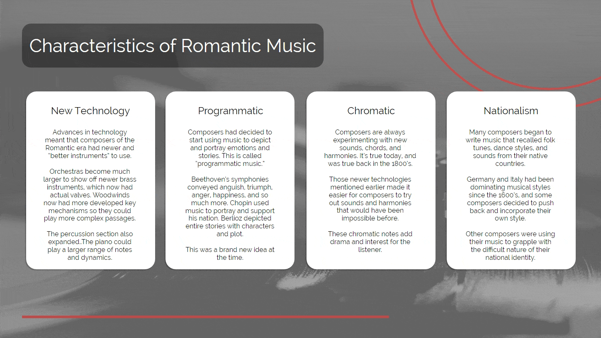

Music teachers in K-12 settings often manage very large classes, with a single teacher frequently responsible for over 50 students at a time. When these teachers need to be absent, it becomes challenging to keep the class engaged in meaningful learning activities under a substitute. As a result, students who are accustomed to hands-on, engaging rehearsals are often left with busy work that merely aims to keep them under control. This module offers a proof-of-concept demonstrating that content from other areas of music education—beyond performance and rehearsal—can be effectively packaged and delivered to students without requiring an instructor. By doing so, students can engage with music-related content and gain exposure to topics like music history and theory, which are often overlooked in traditional K-12 music programs.
I began the design process by considering several potential solutions and content areas. After creating basic sketches and wireframes, I determined that a music history lesson would be most suitable for this concept project. Using visual mapping, I outlined the content that should be included when teaching about a music history period through eLearning. A lesson plan based on Gagne’s nine events of instruction organized the content into a sequence of interactions to support the desired learning outcomes. Next, I used Articulate Storyline 360 to prototype and develop the module. This involved creating each slide, writing and loading the content, recording voiceover lines and closed captions, and adding micro-interactions to each slide. Since the module was designed to be used as a "sub plan" for absent teachers, I focused on providing substantial content. However, to prevent cognitive overload, I used interactions and animations to allow learners to control the flow of information. To check for understanding, I created a simple aural identification exercise, giving learners an opportunity to apply the information in an authentic musical context.



Throughout this project, I gained significant experience in utilizing the advanced features of Articulate Storyline, including multi-layered slides, conditional formatting, variables, and animations. The resulting module, while still maintaining a linear structure similar to a PowerPoint, enables users to control the flow and sequence of information to enhance engagement. Future iterations of this concept could include the development of additional lessons focusing on other music history periods. While this prototype centers on the Romantic Era, there are other periods such as the Medieval, Renaissance, Baroque, Classical, Contemporary, and 20th century that offer rich histories and contexts for exploration. A comprehensive series of these "sub lessons" could provide teachers with an effective, ready-to-use resource for their classrooms.